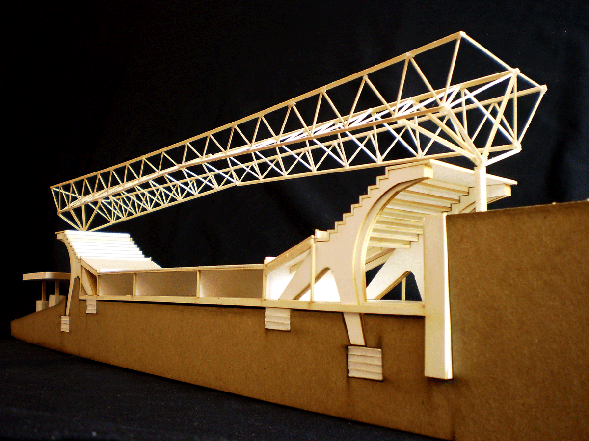

Brooklyn Waterfront Velodrome
A focal entertainment complex for revitalizing an historic industrial port.
- Type: Stadium, Civic, Urban Planning, Student Work
- Date: Winter 2013
- Location: New York City, New York, USA| Red Hook Neighborhood
- Team Members: n/a
- Size: 366,700 sf (34,000 sqm) velodrome | 2,000 seat arena | 300' (91m) long span structure
The Brooklyn shore of the East River in New York City has historically been an important node for commerce centered around nautical transportation, however the abandoning of industry has left a fractured built environment behind. However, the area currently is experiencing a transformation into a lively outdoor recreational destination. The Brookyln Bridge Park has made great strides to this end, yet the addition of a main attraction with a variety of uses can bring greater life and vitality to the district. The design study focuses on accomodating a variety of uses both public + private, static + flexible within a dedicated, iconic long-span structure.
Site Context & Project Location
Velodrome Lower Level, Ground Level, & Upper Level Plans
Velodrome Structural Components

Velodrome Sectional Model